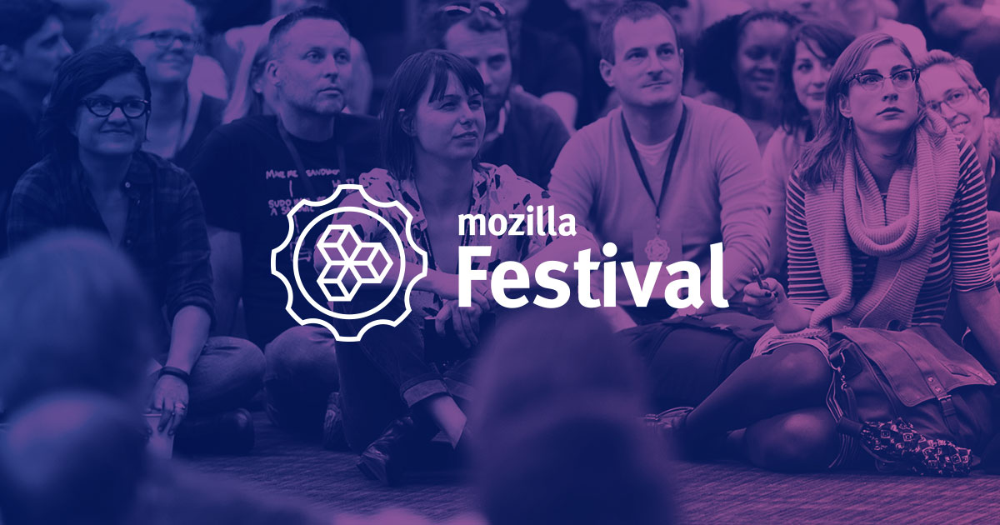
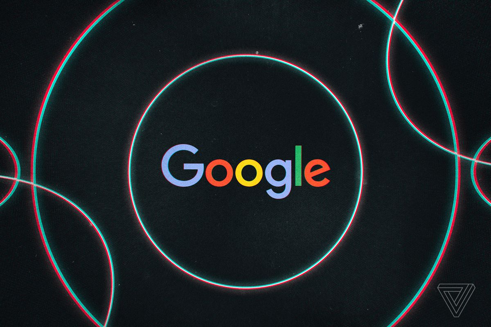

Bank of America
We had a visit to Bank of America and it was an opportunity to see how a company like them operates daily, we were shown their workspace
and how they manage their teams in sections. After the visit, we worked with Bank of America who hosted the project which was to take a huge
amount of data about London and find a certain niche and link it to crime. I was chosen to be the Data analyst for the team and I learned
how to use pandas to find and organise data. This was great to get me out my comfort zone and work in a team.
Wordplay Fintech Hackathon
One of the first major hackathons I attended was one of the most eye-opening hackathons I had, I learned, enjoyed and networked
with a lot of amazing people. However, with the group I was in we did not manage to win with our application idea, however, it was
a great opportunity to network with people in industries and get a sneak peek of how it's like to make a start-up.

Mozilla Festival(Mozfest)
Over the years I have been interested in attending events, which led me to find mozfest and since then I have attended 3 Mozfest events
so far and hoping to attend more. Mozfest was a great opportunity for me to find out a lot about a variety of different tech and how it
works. Also, mozfest is a great place to network with people of your interest.

Google Event
Google had set up events to allow young people to come and visit Google HQ and meet a lot of other companies,
talk about what they do, what their interview process is like and what they do as a company. This was great for me so that I can see what
I was interested in and what I might pursue as a career.